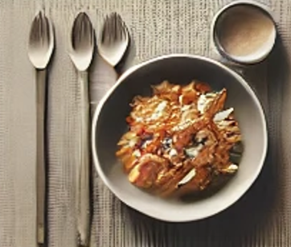

10 Minutes O'Four
Chaque semaine, découvrez de nouvelles recettes rapides et savoureuses à essayer chez vous !
En panne d'inspiration ?
Et pourquoi pas cette délicieuse recette ! Clique sur l'image pour voir ce que nous t'avons préparé !